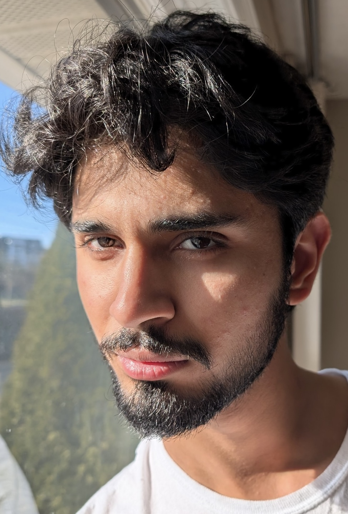

Our Team

Prof. Shianling Wu
Advisor
Advises CSAI by overseeing club operations, guiding initiatives, organizing events, and mentoring students on projects and activities.

Abubaker Ahmadi
President
Leads and organizes CSAI initiatives, oversees projects, manages publicity, grows membership, and coordinates events.
This is a test only
This is a test only
Anthony Joseph Carpinello
Vice President
Supports CSAI initiatives, assists with projects and events, oversees committees, engages members, and chairs events.

New Officer
Blog & Media
Publishes blog posts, captures project highlights, and manages CSAI communications.